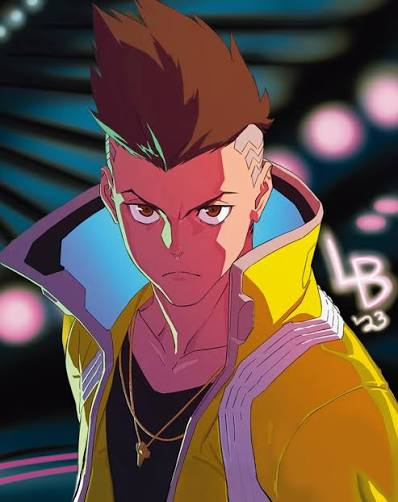
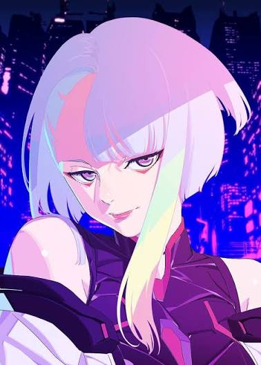
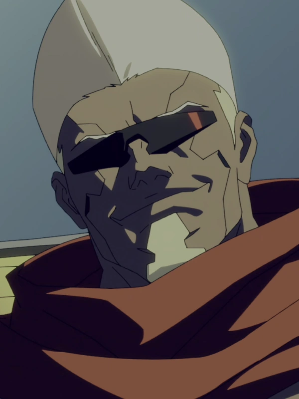
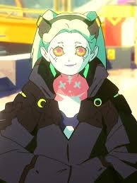
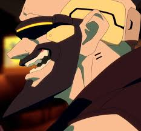
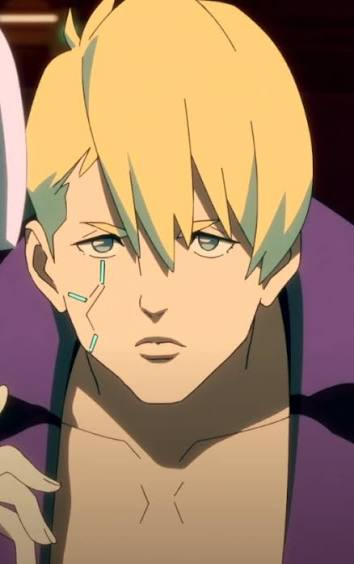
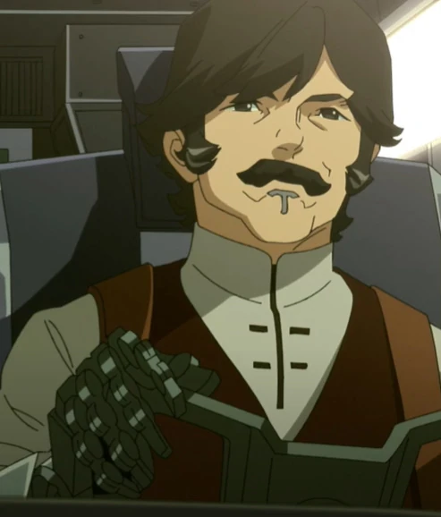
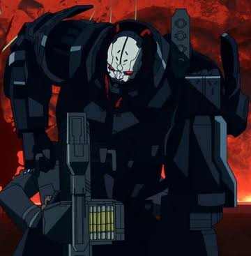
David Martinez | Lucy | Maine | Rebecca | Pilar | Dorio | Falco | Adam Smasher
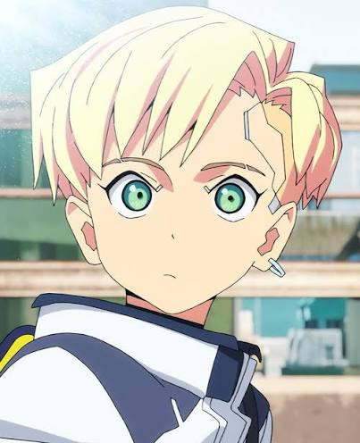
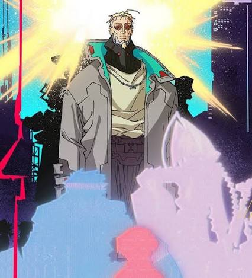
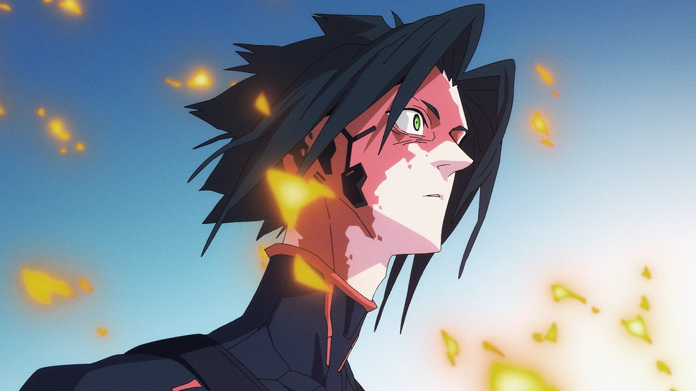
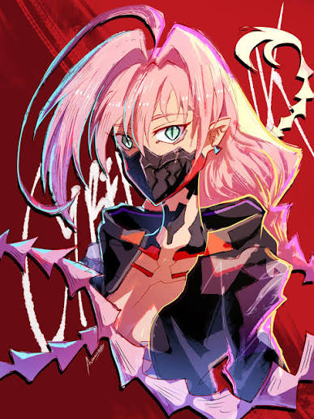
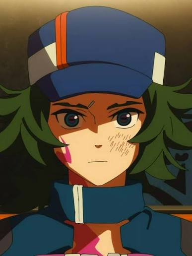
Roman Carax | Weak Kingsley | D | Talia Yang |Omi|
A 17-year-old kid from Night City who ends up with military-grade cyberware that most bodies can't handle. He joins Maine's crew and becomes an edgerunner.
Back to topA mysterious netrunner who introduces David to the edgerunner life. She keeps her past hidden and dreams of leaving Night City for the Moon.
Back to topA veteran mercenary and former Militech soldier who leads the crew. He takes David in like a mentor, but all the cyberware he carries puts him at risk.
Back to topA short, hot-headed fighter with a huge personality and a love of big shotguns. She is Pilar's younger sister and fiercely loyal to the crew.
Back to topThe loud, joking tech expert of Maine's crew and Rebecca's older brother. He looks after the crew's gear and cyberware.
Back to topMaine's right-hand woman and girlfriend. A calm, experienced edgerunner who keeps the crew steady when things go wrong.
Back to topA nomad and the crew's driver. He is the reliable getaway driver for every job.
Back to topArasaka's feared cyborg enforcer, more machine than man. He is the most dangerous enemy the crew faces.
Back to topA young film lover who records everyday life in Night City. He wants to find real stories in a city that prefers braindances to cinema.
Back to topOnce known as King, a top edgerunner at the peak of his career. After surviving cyberpsychosis he lives without his old chrome, in the shadow of his former glory.
Back to topA netrunner from the Snake Nation with sharp tech skills and a thirst for revenge. He is hunting the killer who wiped out his clan.
Back to topA rebellious young woman raised in the corporate towers who is drawn to heavy cyberware and the violent Maelstrom gang.
Back to topA nomad from the Snake Nation and one of the few survivors of the massacre that wiped out her clan. She is D's old friend, and she wants him to see there's still a life worth living beyond revenge.
Back to top